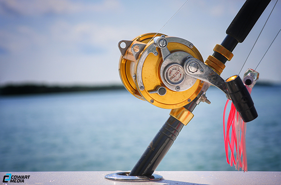
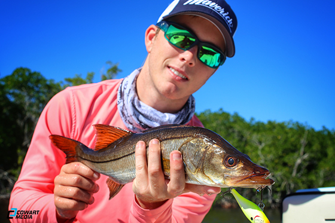
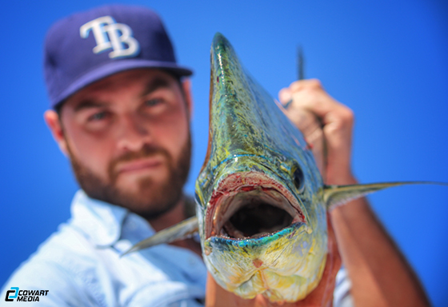
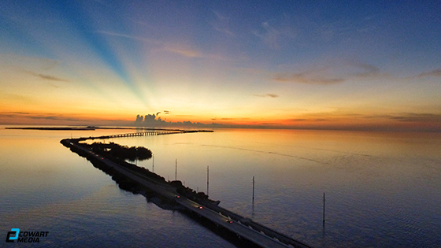

Captain Ridge Murphy stalking the flats in pursuit of catching Permit and Bonefish.
A fishing rod soaking up the sun after a long day of reeling in Mahi Mahi.
Captain Ridge Murphy holding up a dark colored Everglades Snook caught by one of his clients.
A highly memorable moment towards Brandon Roushe as he holds up his first caught Mahi Mahi.
An aerial shot of Lower Matecumbe Key as the sun closes up shop for the day.